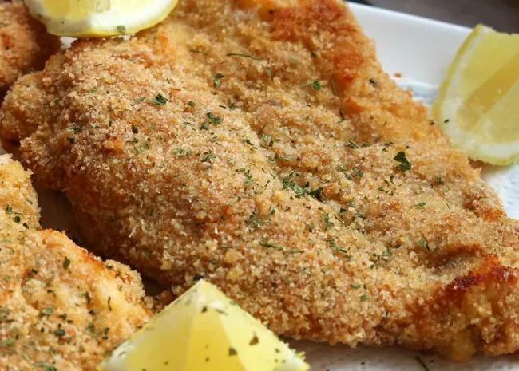

Chicken Cutlets

Image by BUCKWHEAT QUEEN and found on allrecipes.com.
Recipe for making tasteful chicken cutlets
A simple way of cooking chicken cutlets as a side dish for dinner.
Ingredients
- Chicken Cutlets
- Eggs
- Milk
- Italian Bread Crumbs
- Canola Oil or Olive Oil
- Optional: Lemons
Steps
- Preparation: If cooking with 4-6 Chicken Cutlets, use 1 egg and put it in a bowl. Pour a little milk into the bowl and mix well. Pour Italian Bread Crumbs into a separate bowl. Pour a little bit of Canola/Olive Oil onto a pan.
- Dip each Chicken Cutlet into each bowl, starting with the Egg/Milk and then the Italian Bread Crumbs.
- Put each Chicken Cutlet directly in the pan and put flame on Medium/Low (About 3/4 flame).
- Cook on each side for 7 minutes or until fully cooked.
- Optional: Decorate the Chicken Cutlets with Lemons